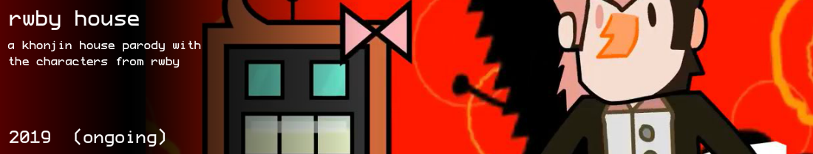

rwby house
rwby house is a parody of khonjin house that uses characters from the rooster teeth show rwby. i do the animation and i find whoever the fuck in regards to voice acting. episodes are released whenever and is merely a side project if i don't have anything else to do that i'm currently interested in.
the show revolves around neo, one of the villains that show up in later volumes/seasons of rwby but for future episodes i plan on the actual main 4 instead of these random other characters that aren't in actual groups in the original show. there's also a lot of differences with character personalities so don't expect anything to be correct from the show, like, at all
if you wanna help voice act stuff then you can go and message me about it. if you also want to submit episodes then just send me a script and i'll see if i can include it. note that the show is most CERTAINLY ironic so there's no WEIRD PLOT SHENANIGANS under the hood. daz bout' et
sampler
(my favorite episode)